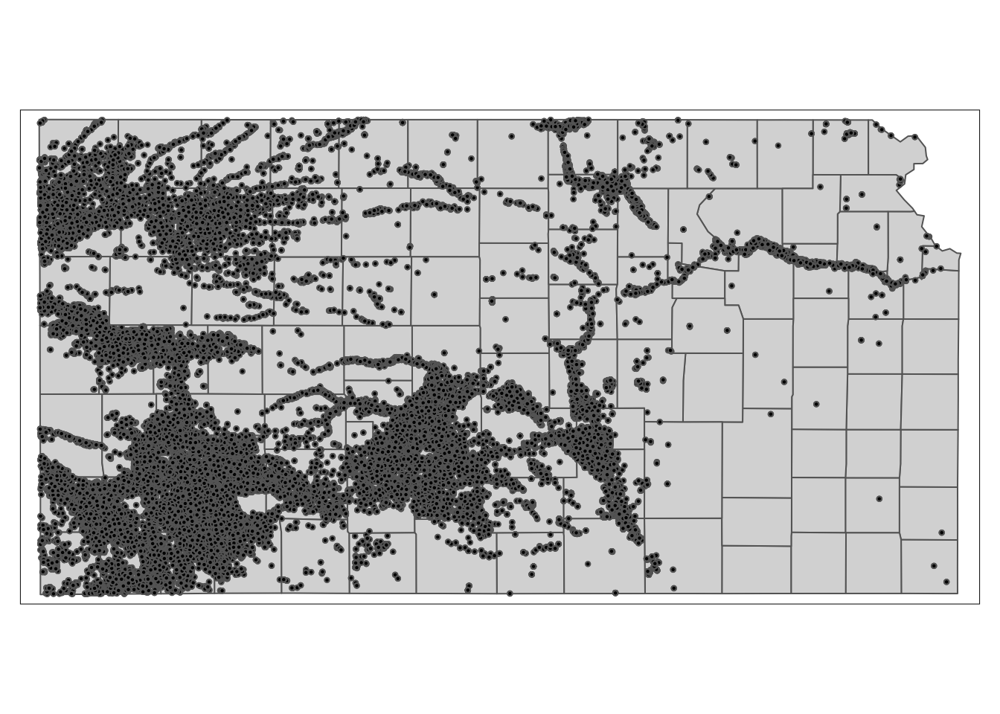

1.5 Demonstration 5: Groundwater use for agricultural irrigation
1.5.1 Project Overview
Objective
- Understand the impact of monthly precipitation on groundwater use for agricultural irrigation
Datasets
- Annual groundwater pumping by irrigation wells in Kansas for 2010 and 2011 (originally obtained from the Water Information Management & Analysis System (WIMAS) database)
- Daymet24 daily precipitation and maximum temperature downloaded using
daymetrpackage
Econometric Model
The econometric model we would like to estimate is:
\[ y_{i,t} = \alpha + P_{i,t} \beta + T_{i,t} \gamma + \phi_i + \eta_t + v_{i,t} \]
where \(y\) is the total groundwater extracted in year \(t\), \(P_{i,t}\) and \(T_{i,t}\) is the collection of monthly total precipitation and mean maximum temperature April through September in year \(t\), respectively, \(\phi_i\) is the well fixed effect, \(\eta_t\) is the year fixed effect, and \(v_{i,t}\) is the error term.
GIS tasks
- download Daymet precipitation and maximum temperature data for each well from within R in parallel
- use
daymetr::download_daymet()andfuture.apply::future_lapply()
- use
Preparation for replication
- Run the following code to install or load (if already installed) the
pacmanpackage, and then install or load (if already installed) the listed package inside thepacman::p_load()function.
if (!require("pacman")) install.packages("pacman")
pacman::p_load(
daymetr, # get Daymet data
sf, # vector data operations
dplyr, # data wrangling
data.table, # data wrangling
ggplot2, # for map creation
RhpcBLASctl, # to get the number of available cores
future.apply, # parallelization
lfe, # fast regression with many fixed effects
modelsummary # regression table generation
)1.5.2 Project Demonstration
We have already collected annual groundwater pumping data by irrigation wells in 2010 and 2011 in Kansas from the Water Information Management & Analysis System (WIMAS) database. Let’s read in the groundwater use data.
#--- read in the data ---#
(
gw_KS_sf <- readRDS("Data/gw_KS_sf.rds")
)Simple feature collection with 56225 features and 3 fields
Geometry type: POINT
Dimension: XY
Bounding box: xmin: -102.0495 ymin: 36.99561 xmax: -94.70746 ymax: 40.00191
Geodetic CRS: NAD83
First 10 features:
well_id year af_used geometry
1 1 2010 67.00000 POINT (-100.4423 37.52046)
2 1 2011 171.00000 POINT (-100.4423 37.52046)
3 3 2010 30.93438 POINT (-100.7118 39.91526)
4 3 2011 12.00000 POINT (-100.7118 39.91526)
5 7 2010 0.00000 POINT (-101.8995 38.78077)
6 7 2011 0.00000 POINT (-101.8995 38.78077)
7 11 2010 154.00000 POINT (-101.7114 39.55035)
8 11 2011 160.00000 POINT (-101.7114 39.55035)
9 12 2010 28.17239 POINT (-95.97031 39.16121)
10 12 2011 89.53479 POINT (-95.97031 39.16121)We have 28553 wells in total, and each well has records of groundwater pumping (af_used) for years 2010 and 2011. Here is the spatial distribution of the wells.
KS_counties <- readRDS("Data/KS_county_borders.rds")
tm_shape(KS_counties) +
tm_polygons() +
tm_shape(gw_KS_sf) +
tm_symbols(size = 0.05, col = "black")
We now need to get monthly precipitation and maximum temperature data. We have decided that we use Daymet weather data. Here we use the download_daymet() function from the daymetr package25 that allows us to download all the weather variables for a specified geographic location and time period26. We write a wrapper function that downloads Daymet data and then processes it to find monthly total precipitation and mean maximum temperature27. We then loop over the 56225 wells, which is parallelized using the future_apply() function28 from the future.apply package. This process takes about an hour on my Mac with parallelization on 7 cores. The data is available in the data repository for this course (named as “all_daymet.rds”).
#--- get the geographic coordinates of the wells ---#
well_locations <-
gw_KS_sf %>%
unique(by = "well_id") %>%
dplyr::select(well_id) %>%
cbind(., st_coordinates(.))
#--- define a function that downloads Daymet data by well and process it ---#
get_daymet <- function(i) {
temp_site <- well_locations[i, ]$well_id
temp_long <- well_locations[i, ]$X
temp_lat <- well_locations[i, ]$Y
data_temp <-
download_daymet(
site = temp_site,
lat = temp_lat,
lon = temp_long,
start = 2010,
end = 2011,
#--- if TRUE, tidy data is returned ---#
simplify = TRUE,
#--- if TRUE, the downloaded data can be assigned to an R object ---#
internal = TRUE
) %>%
data.table() %>%
#--- keep only precip and tmax ---#
.[measurement %in% c("prcp..mm.day.", "tmax..deg.c."), ] %>%
#--- recover calender date from Julian day ---#
.[, date := as.Date(paste(year, yday, sep = "-"), "%Y-%j")] %>%
#--- get month ---#
.[, month := month(date)] %>%
#--- keep only April through September ---#
.[month %in% 4:9, ] %>%
.[, .(site, year, month, date, measurement, value)] %>%
#--- long to wide ---#
dcast(site + year + month + date ~ measurement, value.var = "value") %>%
#--- change variable names ---#
setnames(c("prcp..mm.day.", "tmax..deg.c."), c("prcp", "tmax")) %>%
#--- find the total precip and mean tmax by month-year ---#
.[, .(prcp = sum(prcp), tmax = mean(tmax)), by = .(month, year)] %>%
.[, well_id := temp_site]
return(data_temp)
gc()
}Here is what one run (for the first well) of get_daymet() returns
#--- one run ---#
(
returned_data <- get_daymet(1)[]
) month year prcp tmax well_id
1: 4 2010 40.72 20.71700 1
2: 5 2010 93.60 24.41677 1
3: 6 2010 70.45 32.59933 1
4: 7 2010 84.58 33.59903 1
5: 8 2010 66.41 34.17323 1
6: 9 2010 15.58 31.25800 1
7: 4 2011 24.04 21.86367 1
8: 5 2011 25.59 26.51097 1
9: 6 2011 23.15 35.37533 1
10: 7 2011 35.10 38.60548 1
11: 8 2011 36.66 36.94871 1
12: 9 2011 9.59 28.31800 1We get the number of cores you can use by RhpcBLASctl::get_num_procs() and parallelize the loop over wells using future_lapply().29
#--- prepare for parallelization ---#
num_cores <- get_num_procs() - 1 # number of cores
plan(multiprocess, workers = num_cores) # set up cores
#--- run get_daymet with parallelization ---#
(
all_daymet <-
future_lapply(
1:nrow(well_locations),
get_daymet
) %>%
rbindlist()
) month year prcp tmax well_id
1: 4 2010 42 20.96667 1
2: 5 2010 94 24.19355 1
3: 6 2010 70 32.51667 1
4: 7 2010 89 33.50000 1
5: 8 2010 63 34.17742 1
---
336980: 5 2011 18 26.11290 78051
336981: 6 2011 25 34.61667 78051
336982: 7 2011 6 38.37097 78051
336983: 8 2011 39 36.66129 78051
336984: 9 2011 23 28.45000 78051Before merging the Daymet data, we need to reshape the data into a wide format to get monthly precipitation and maximum temperature as columns.
#--- long to wide ---#
daymet_to_merge <-
all_daymet %>%
dcast(
well_id + year ~ month,
value.var = c("prcp", "tmax")
)
#--- take a look ---#
daymet_to_merge well_id year prcp_4 prcp_5 prcp_6 prcp_7 prcp_8 prcp_9 tmax_4 tmax_5
1: 1 2010 42 94 70 89 63 15 20.96667 24.19355
2: 1 2011 25 26 23 35 37 9 21.91667 26.30645
3: 3 2010 85 62 109 112 83 41 19.93333 21.64516
4: 3 2011 80 104 44 124 118 14 18.40000 22.62903
5: 7 2010 44 83 23 99 105 13 18.81667 22.14516
---
56160: 78049 2011 27 6 38 37 34 36 22.81667 26.70968
56161: 78050 2010 35 48 68 111 56 9 21.38333 24.85484
56162: 78050 2011 26 7 44 38 34 35 22.76667 26.70968
56163: 78051 2010 30 62 48 29 76 3 21.05000 24.14516
56164: 78051 2011 33 18 25 6 39 23 21.90000 26.11290
tmax_6 tmax_7 tmax_8 tmax_9
1: 32.51667 33.50000 34.17742 31.43333
2: 35.16667 38.62903 36.90323 28.66667
3: 30.73333 32.80645 33.56452 28.93333
4: 30.08333 35.08065 32.90323 25.81667
5: 31.30000 33.12903 32.67742 30.16667
---
56160: 35.01667 38.32258 36.54839 28.80000
56161: 33.16667 33.88710 34.40323 32.11667
56162: 34.91667 38.32258 36.54839 28.83333
56163: 32.90000 33.83871 34.38710 31.56667
56164: 34.61667 38.37097 36.66129 28.45000Now, let’s merge the weather data to the groundwater pumping dataset.
(
reg_data <-
data.table(gw_KS_sf) %>%
#--- keep only the relevant variables ---#
.[, .(well_id, year, af_used)] %>%
#--- join ---#
daymet_to_merge[., on = c("well_id", "year")]
) well_id year prcp_4 prcp_5 prcp_6 prcp_7 prcp_8 prcp_9 tmax_4 tmax_5
1: 1 2010 42 94 70 89 63 15 20.96667 24.19355
2: 1 2011 25 26 23 35 37 9 21.91667 26.30645
3: 3 2010 85 62 109 112 83 41 19.93333 21.64516
4: 3 2011 80 104 44 124 118 14 18.40000 22.62903
5: 7 2010 44 83 23 99 105 13 18.81667 22.14516
---
56221: 79348 2011 NA NA NA NA NA NA NA NA
56222: 79349 2011 NA NA NA NA NA NA NA NA
56223: 79367 2011 NA NA NA NA NA NA NA NA
56224: 79372 2011 NA NA NA NA NA NA NA NA
56225: 80930 2011 NA NA NA NA NA NA NA NA
tmax_6 tmax_7 tmax_8 tmax_9 af_used
1: 32.51667 33.50000 34.17742 31.43333 67.00000
2: 35.16667 38.62903 36.90323 28.66667 171.00000
3: 30.73333 32.80645 33.56452 28.93333 30.93438
4: 30.08333 35.08065 32.90323 25.81667 12.00000
5: 31.30000 33.12903 32.67742 30.16667 0.00000
---
56221: NA NA NA NA 76.00000
56222: NA NA NA NA 182.00000
56223: NA NA NA NA 0.00000
56224: NA NA NA NA 134.00000
56225: NA NA NA NA 23.69150Let’s run regression and display the results.
#--- run FE ---#
reg_results <-
fixest::feols(
af_used ~ # dependent variable
prcp_4 + prcp_5 + prcp_6 + prcp_7 + prcp_8 + prcp_9
+ tmax_4 + tmax_5 + tmax_6 + tmax_7 + tmax_8 + tmax_9
| well_id + year, # FEs
cluster = "well_id",
data = reg_data
)
#--- display regression results ---#
modelsummary::modelsummary(
reg_results,
stars = TRUE,
gof_omit = "IC|Log|Adj|Within|Pseudo"
)| Model 1 | |
|---|---|
| prcp_4 | -0.053*** |
| (0.017) | |
| prcp_5 | 0.112*** |
| (0.010) | |
| prcp_6 | -0.073*** |
| (0.008) | |
| prcp_7 | 0.014 |
| (0.010) | |
| prcp_8 | 0.093*** |
| (0.014) | |
| prcp_9 | -0.177*** |
| (0.025) | |
| tmax_4 | 9.159*** |
| (1.227) | |
| tmax_5 | -7.505*** |
| (1.062) | |
| tmax_6 | 15.134*** |
| (1.360) | |
| tmax_7 | 3.969** |
| (1.618) | |
| tmax_8 | 3.420*** |
| (1.066) | |
| tmax_9 | -11.803*** |
| (1.801) | |
| Num.Obs. | 55754 |
| R2 | 0.942 |
| FE: well_id | X |
| FE: year | X |
| Std. errors | Clustered (well_id) |
| * p < 0.1, ** p < 0.05, *** p < 0.01 |
That’s it. Do not bother to try to read into the regression results. Again, this is just an illustration of how R can be used to prepare a regression-ready dataset with spatial variables.
See here for a fuller explanation of how to use the
daymetrpackage.↩︎This may not be ideal for a real research project because the original raw data is not kept. It is often the case that your econometric plan changes on the course of your project (e.g., using other weather variables or using different temporal aggregation of weather variables instead of monthly aggregation). When this happens, you need to download the same data all over again.↩︎
For Mac users,
mclapplyorpbmclapply(mclapplywith progress bar) are good alternatives.↩︎